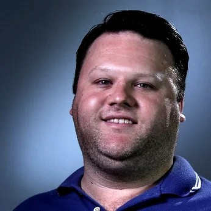

home
Rafting Site
Rafting Site Plan
Linkedin
facebook
Diego Deotti | WDD 130

Hello! My name is Diego Deotti and I'm from Brazil, I enjoy learn programming as my hobby
Campinas Brazil Temple
Curitiba Brazil Temple
Fortaleza Brazil Temple